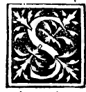

CHAPTER XXXIV¶
On the Inscriptions of the Five Regular Bodies in One Another, How Many There Are in All, and Why.

Now we enter the fifteenth book of our philosopher (added by Campanus to complete the treatise on the regular bodies), which teaches how the five regular bodies are inscribed in one another—that is, how one regular body is placed inside another so that all the solid angles (vertices) of the inner body touch either the faces, the edges, or the vertices of the outer containing body.
Enumeration of the Mutual Inscriptions of the Five Regular Solids (Campanus Book XV)
If each of the five regular bodies could be inscribed in each of the other four, there would be \(5 \times 4 = 20\) mutual inscriptions in all (four for each of the five bodies). Yet in geometric truth, Campanus demonstrates that twelve principal inscriptions are regularly constructed in Book XV (Propositions 1–12), while at the end of these chapters (Chapter XLVI) we shall examine why the remaining combinations are excluded—most notably why the duodecedron hospitably receives all four of the other regular bodies within itself, whereas the ycocedron denies entry to the octocedron.
Overview of the Twelve Inscriptions (Chapters XXXV–XLVI)
In the Tetracedron (4 triangular bases):
Only one regular body is inscribed in Book XV: the octocedron (Chapter XXXV, Campanus XV.1).
In the Exacedron or Cube (6 square bases):
Two regular bodies are inscribed directly in the opening sequence: the tetracedron (Chapter XXXVI, Campanus XV.2) and the octocedron (Chapter XXXVII, Campanus XV.3); and later the ycocedron (Chapter XLIV, Campanus XV.10).
In the Octocedron (8 triangular bases):
Two regular bodies are inscribed: the cube (Chapter XXXVIII, Campanus XV.4) and the tetracedron (Chapter XXXIX, Campanus XV.5).
In the Ycocedron (20 triangular bases):
Three regular bodies are inscribed: the duodecedron (Chapter XL, Campanus XV.6), the cube (Chapter XLI, Campanus XV.7), and the tetracedron (Chapter XLII, Campanus XV.8).
In the Duodecedron (12 pentagonal bases):
All four of the other regular bodies are inscribed: the ycocedron (Chapter XLIII, Campanus XV.9), the octocedron (Chapter XLV, Campanus XV.11), the cube (Chapter XLVI, Campanus XV.12), and the tetracedron (Chapter XLVI, Campanus XV.12 Corollary).
Let us now set forth each of these constructions in order with its figure and demonstration.